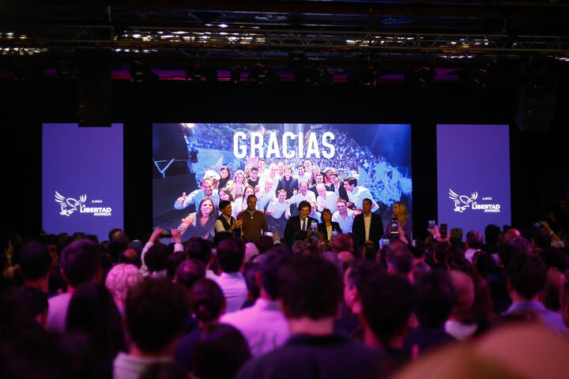
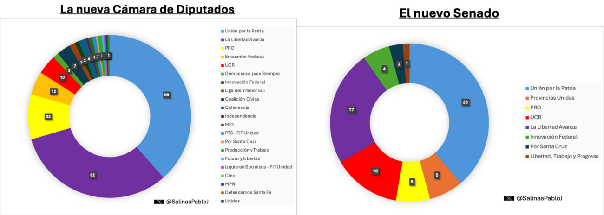
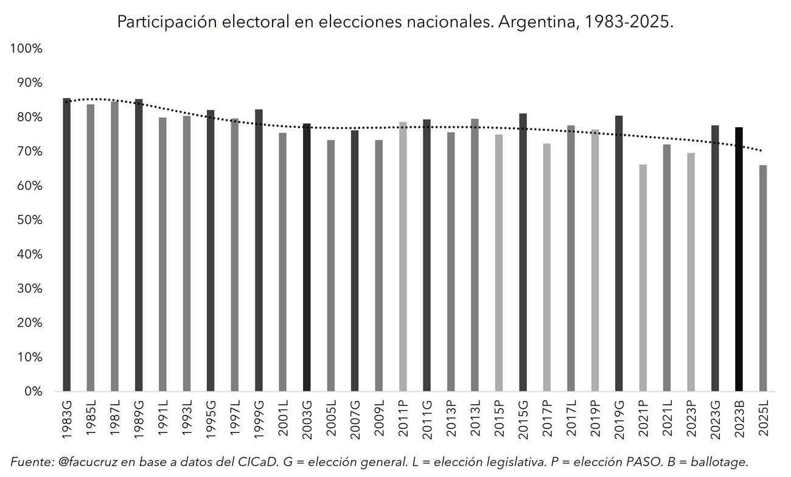
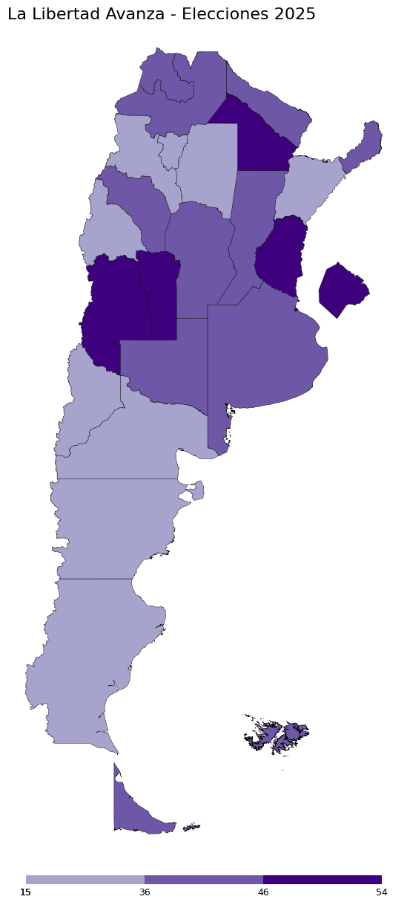
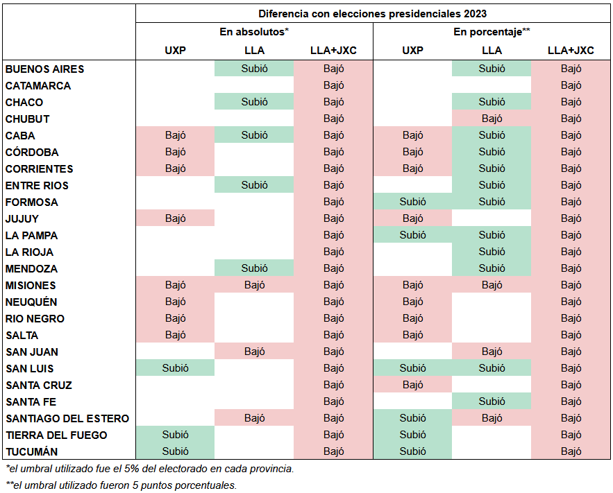

Elecciones Legislativas 2025
Las claves de la resurrección del gobierno y la decepción del peronismo
Nota originalmente publicada en Agencia Paco Urondo. Disponible aquí.
Elecciones Legislativas 2025: Las claves de la resurrección del gobierno y la decepción del peronismo

Contra los pronósticos de las últimas semanas, Javier Milei cumplió su objetivo y pintó el mapa de violeta en las elecciones de medio término de este 26 de octubre. A nivel legislativo, el gobierno sale fortalecido, mientras que el peronismo no cambió drásticamente su posición relativa en las Cámaras, aunque sí obtuvo resultados por debajo de lo esperado. ¿Cuáles fueron las claves de la elección?
Las elecciones del domingo 26 de octubre han terminado, como suele suceder en la Argentina, con sorpresa: con 40,7% de los votos, La Libertad Avanza se impuso a nivel nacional frente a un 33,8% de Fuerza Patria y sus aliados. Lo inesperado del resultado de los comicios no ha sido, quizá, la victoria oficialista, que estaba en los papeles de los analistas, sino, sobre todas las cosas, el porcentaje alcanzado por el gobierno nacional, que estuvo por encima de la expectativa construida a partir del terremoto bonaerense del 7 de septiembre.
Además, ha resultado sorpresiva la cantidad de provincias que La Libertad Avanza pintó de violeta. El gobierno se impuso en 15 territorios –incluido el de la Provincia de Buenos Aires, con una fuerte remontada–, el peronismo y sus aliados en 8, y el provincialismo ganó en el restante, Corrientes.

La elección estuvo marcada, también, por una dispersión del voto relativamente importante: aún cuando las dos principales fuerzas políticas acumularon más del 70% de los sufragios, puede decirse también que una cuarta parte del electorado votó por terceras fuerzas. Sin embargo, es importante destacar el fuerte protagonismo de los provincialismos no alineados con el proyecto de Provincias Unidas, que cosechó un magro 6% a nivel nacional. La alternativa principal a LLA y FP no fue, entonces, una fuerza nacional, sino las fuerzas provinciales con identidad local.
Además de la solitaria victoria de Vamos Corrientes, 6 fuerzas provinciales quedaron en 2° lugar en estas elecciones. Lo propio sucedió en Misiones, Neuquén, Salta, San Juan, Córdoba y Jujuy, siendo sólo estos últimos dos los territorios en los que los espacios provinciales se integraron a Provincias Unidas. Además, PU quedó tercero en Santa Fe y Chubut, territorios gobernados por Maximiliano Pullaro e Ignacio Torres respectivamente, y en los cuales, hasta ayer, había una expectativa de mayor competitividad. Puede pensarse, así, que la dilución de sellos provinciales en una marca nacional ha sido, hasta aquí, una apuesta fallida.
La composición del Congreso muestra a un peronismo que se mantiene en condiciones similares a las que tenía hasta ahora, mientras que La Libertad Avanza logró ampliar sensiblemente su bloque “puro”, mayormente en detrimento del PRO y la Unión Cívica Radical. Con sus aliados amarillos, el gobierno libertario conseguirá cómodamente el tercio que le permita defender los decretos y vetos del Presidente, mientras que, con otros socios circunstanciales, presumiblemente le resultará más factible avanzar con leyes que promuevan reformas estructurales.

El otro dato insoslayable de la elección ha sido el nivel de participación. Con un consolidado nacional de 68%, la caída ha sido de 8p.p. respecto a las presidenciales de 2023, y de 3p.p. en relación a las legislativas de 2021, marcadas por la pandemia del coronavirus. La elección de este domingo ha tenido la participación más baja desde el retorno de la democracia, en una evidente muestra del desencanto de buena parte de la sociedad argentina con los resultados que le ha dado su clase política en los últimos años.

No obstante, resulta relevante mencionar también que la caída en la participación ha sido heterogénea. Por ejemplo, la misma ha sido de menos de 1p.p. en Tucumán, Catamarca y Santiago del Estero. Las 5 provincias con mayor caída en relación al 2023 han sido Corrientes, San Luis, Córdoba, Misiones y Santa Fe: en todas ellas, a excepción de la segunda mencionada, la oferta electoral contaba con fuertes opciones de impronta local que podían funcionar como una contención frente al desencanto con los espacios protagonistas de la polarización nacional, pero esto no se ha verificado con claridad.

Las claves de la elección del peronismo
A nivel nacional, Fuerza Patria y sus aliados, entendidos en sentido amplio, alcanzaron un 33,8% de los votos. A nivel porcentual, la elección del peronismo no ha sido del todo mala, sino que se mantuvo en línea con los porcentajes habituales del espacio en las elecciones de medio término. No obstante, es fundamental apuntar a que, producto de la caída de la participación, un porcentaje similar sobre una menor base de electores da cuenta de una caída de los votos en términos absolutos. Con respecto a 2023, el peronismo perdió cerca de 1,4 millones de votos, en un dato que pone en discusión la lectura de que el ausentismo era, casi en su totalidad, de ex-electores mileístas.
La clave de la derrota del peronismo ha estado en la Provincia de Buenos Aires. El espacio perdió 500.000 votos contra su versión del 2023, pero lo que resulta aún más llamativo es que perdió alrededor de 250.000 votos contra su desempeño de las elecciones provinciales del 7 de septiembre. Se estima que al menos la mitad de los mismos se explican por la imposibilidad de votar de los aproximadamente 250.000 extranjeros que lo hicieron el mes pasado, pero no deja de resultar llamativo que se haya dado una caída en los votos del espacio aún cuando la participación en la Provincia creció en 7p.p.
No obstante, pueden identificarse heterogeneidades territoriales en el desempeño electoral de Fuerza Patria y sus aliados. El porcentaje de votos del espacio comparado con 2023 creció en Tierra del Fuego, San Luis, La Pampa, Formosa, Santiago del Estero y Tucumán, provincias en las que se puede identificar una tracción de fuertes liderazgos locales, tales como los de Gerardo Zamora y Gildo Insfrán.
Sin embargo, hay 8 provincias en las que el peronismo cayó tanto a nivel absoluto como porcentual: CABA, Córdoba –donde parece ser que Natalia de la Sota, más que absorber votos del cordobesismo, lo hizo del kirchnerismo–, Corrientes, Jujuy, Misiones, Neuquén, Río Negro y Salta. En este punto, nuevamente cabe plantear la hipótesis del ausentismo de un votante tradicionalmente peronista, pues no se puede identificar con nitidez que las terceras fuerzas hayan absorbido ese caudal de votos.

El desempeño de La Libertad Avanza
Los resultados obtenidos por el oficialismo nacional dejan, en primera medida, dos conclusiones salientes: un fuerte crecimiento del espacio con respecto a su base electoral originaria (de 30% en las generales del 2023 a 40,7% en la jornada de ayer), y una inapelable caída de LLA frente a la sumatoria de los votos obtenidos por Javier Milei y Patricia Bullrich juntos en las presidenciales (53,8%).
En términos absolutos, este movimiento de los sufragios se verifica con mayor nitidez. Este 26O, el gobierno obtuvo 9,3 millones de votos, lo que representa una sumatoria de 1,3 millones respecto a lo obtenido por Javier Milei el 22 de octubre de 2023, y una caída de nada más y nada menos que 5 millones de votos frente a la sumatoria del presidente y su hoy ministra de Seguridad en dicha jornada.

La sumatoria de los votos de La Libertad Avanza y el extinto espacio de Juntos por el Cambio no es arbitraria: la victoria oficialista en CABA –histórico bastión del PRO–, Mendoza –con una enorme fortaleza del radicalismo local–, Buenos Aires y Entre Ríos, por mencionar algunos casos salientes, no se podría explicar sin tener en cuenta al histórico electorado cambiemita.
Esta situación abre un interrogante clave: ¿quiénes son los que votaron, en esta oportunidad, a La Libertad Avanza? El crecimiento del ausentismo, el flojo desempeño del anti-kirchnerismo moderado de parte de Provincias Unidas, y el éxito violeta en históricos bastiones de Juntos por el Cambio permite proponer una respuesta: el apoyo a Milei ha mutado, pasando a asemejarse más a la vieja base electoral macrista y perdiendo votos originarios por la canaleta del ausentismo.
Esta dinámica se da de manera generalizada en la mayoría de las provincias, aunque podemos contar algunas excepciones: en Chubut, Misiones, San Juan y Santiago del Estero pierde participación en el voto positivo incluso sin sumar los votos de Juntos por el Cambio.
La posición y las negociaciones del oficialismo nacional respecto a los gobernadores también marcaron su influencia en los resultados del domingo. Si bien el resultado a nivel nacional fue de 40,7%, la victoria fue especialmente contundente en las provincias donde fue en alianza con el sector gobernante local como Mendoza, Chaco, Entre Ríos y la Ciudad Autónoma de Buenos Aires: en promedio, su resultado en estas provincias fue del 49,9%.

La BUP y su efecto sobre el voto
Además de la mitad de la Cámara de Diputados, las elecciones han definido la renovación de un tercio del Senado. 8 provincias eligieron a sus representantes para la Cámara Alta con una boleta particular, con el doble de altura, con una fila distinta para cada categoría. En este sentido, es importante detenerse sobre las diferencias entre diputados y senadores, dado que pueden ayudarnos a comprender y dimensionar los efectos del nuevo instrumento de votación que tiene nuestro país, la Boleta Única Papel.
Lo primero a señalar es la diferencia en el voto en blanco sobre la segunda categoría, que podríamos atribuir a una incomprensión del instrumento. En promedio, el voto en blanco se situó en 5 puntos porcentuales por encima para la categoría de diputados respecto a la de senadores, posiblemente debido a su ubicación en la parte inferior de la boleta. En los extremos podemos señalar a Chaco (-7,2p.p.) y Entre Ríos (-6,5p.p.) con las mayores diferencias, y a la Ciudad de Buenos Aires (-2,6p.p.) y a Santiago del Estero (-3,5p.p.) con las menores.

En algunas provincias se presentaron también diferencias importantes entre las distintas categorías de los mismos partidos. En la Ciudad de Buenos Aires, la lista de Fuerza Patria obtuvo 3,7p.p. más en la categoría de senadores que en la de diputados, probablemente debido al voto cruzado con el Frente de Izquierda, que sumó 56 mil votos más en la lista de la cámara baja con la candidatura de Myriam Bregman. Patricia Bullrich también cosechó 3p.p. más que su par en la categoría de diputados, aunque con un corte más disperso.
Río Negro también marcó un punto de interés en este aspecto. La lista de La Libertad Avanza para la categoría de senadores estaba encabezada por Lorena Villaverde, recientemente cuestionada, tal como sucedió con José Luis Espert, por sus vinculaciones con el narcotráfico. Villaverde obtuvo 4p.p. menos que la lista de diputados y esa diferencia la colocó en el segundo lugar, perdiendo la oportunidad de conquistar los dos senadores por la mayoría en la provincia.